术语检查
默认开启从选定 mark 中建立新术语对，也可结合历史 TB 回扫全文，定位缺失、错译或映射冲突。
GUI 使用手册
本地化质量检查与表格处理。
常用流程
选择检查项目，一次生成报告；在报告中填写修订，再回到软件应用。

点击“记住选项”保存当前输入路径、工作表、列、开始行及全部检查与详细设置。下次打开恢复这些选择，但不会读取 Excel 或自动执行；以后调整需再次点击才会保存。
选择输入文件后，页面会预览 workflow_check_原文件名.xlsx；报告生成在输入文件同目录。
| 界面项 | 作用 | 建议 |
|---|---|---|
| 输入 Excel | 选择待检查的 .xlsx 或 .xlsm 文件。 |
检查期间保持文件可读写；如提示文件锁定，请先关闭 Excel 中打开的同名文件。 |
| 检查工作表 | 决定本次检查的数据表。选择文件后会自动载入工作表列表。 | 切换工作表后，GUI 会重新尝试识别 Source / Target 列。 |
| Source 列 / Target 列 | 填写 Excel 列字母，例如 A、B、AA。 |
两列不能相同。自动识别失败时可直接手动修改。 |
| 开始行 | 从该 Excel 行开始处理，默认 2。 |
通常第 1 行是表头；多行表头时改为第一条实际数据所在行。 |
自动识别不到列时，可以手动填写列字母，或到设置保存项目使用的表头别名。
从选定 mark 中建立新术语对，也可结合历史 TB 回扫全文，定位缺失、错译或映射冲突。
先忽略首尾空白和包裹整个文本的成对引号、括号，再按 Source 分组；对应多个不同 Target 时报告组内每一行，报告保留原文。
使用相同的文本归一化规则，查找非空 Target 是否对应多个 Source。适合发现误复用，但合理复用也很常见。
在“术语与翻译一致性”中勾选后运行，用于复核长句中短句的译法。右侧箭头可设置子串最小有效字符数。
报告定位到长句行，问题描述附参考短句行号和译文。结合上下文人工复核，再填写“修改后target”。
比较 Tag、Placeholder 或 memoQ Marker 的内容、次数及尖括号层级结构。
比较 Source / Target 的真实换行数。LF、CRLF、CR 都支持；文本 \n 不算真实换行。
比较数字表达式及重复次数，不要求顺序一致；自动排除 URL、Tag、Placeholder 等内部数字。
比较 URL 完整文本和重复次数，识别 HTTP(S)、FTP、file、mailto 与 www 开头的地址。
定位 Target 中残留的汉字、CJK 标点、全角标点和常见中文排版符号。
检查异常标点、连续空格、首尾空格和全半角混用；四条规则可独立开关。
【】 与半角方括号 []，从正文显式 mark 中发现新术语对。
“保存当前”可把历史 TB 文件、工作表、列和开始行保存为常用项目；之后从下拉框快速复用。
删除项目只删除 QAtools 中的配置，不会删除原始 TB 文件。
启用术语检查时，报告会包含“术语表”。它只写本次实际涉及的历史术语和本批新增术语，不复制整份历史 TB。
<...> tag[color=...] / [/color] tag{...} / {{...}} placeholder\n mark只检查数字 marker：{n}、{n>、<n}。适合 memoQ 导出的成对数字标记。
常规类型和尖括号过滤配置在此模式下会自动停用。

可选 JSON 文件，仅在“常规 Tag”且启用 <...> 时生效。 未选择配置时，工具按内置规则检查全部可识别尖括号 Tag。
..、,,、。。 等；允许 ...、…，连续感叹号和问号不在本规则中。
勾选“子串译文一致性”，点击右侧下拉箭头。CJK 子串最小有效字符数默认 3，其他文字默认 2；可根据项目调整，再点击“确定”。
“取消”会恢复打开前的数值；主页面的“记住选项”会保存这些设置。阈值只限制参考子串，不限制母串。
同时运行术语检查时，完整 Source 等于本次有效 Source 术语的条目会自动排除，交由术语检查处理；仅包含术语的长句仍会检查。
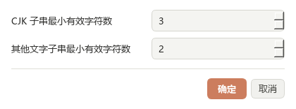
输入工作簿中的业务工作表会完整保留，检查结果以新增工作表呈现。
同一原始行命中多个检查时只保留一行，检查项和问题描述合并展示。
按本次启用的检查列出问题行数，便于快速判断重点。
“本批次是否有问题”可筛选，有问题的状态格浅红突出。只统计该术语实际触发的术语问题；修订后需重新检查以更新状态。
| 行号 | source | target | 修改后target | 问题描述 | 检查项 |
|---|---|---|---|---|---|
| 42 ↗ | Open {name} | 打开 name | 在此填写最终译文 | 【Tag 检查】Target 缺少 {name}；【数字一致性】… | Tag 检查；数字一致性 |
按行号定位原数据并精确核对 Source；不匹配会跳过并提示。报告里的原 Target 仅供参考，误改或清空不会影响回填；即使原数据 Target 已变化，Source 匹配时仍以“修改后target”为准。
常用流程
把待翻译内容整理成 Strings 清单，翻译完成后还原到原工作簿结构。
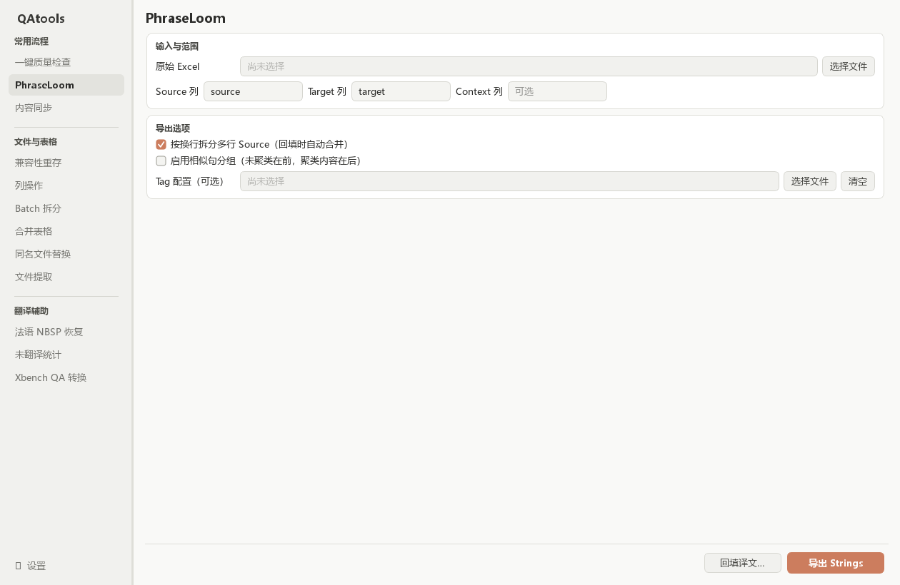
| 界面项 | 使用方式 |
|---|---|
| 按换行拆分多行 Source | 默认开启。每个非空行单独翻译，回填时合并回原单元格；需要整段翻译时取消勾选。 |
| 启用相似句分组 | 默认关闭。开启后相似句排在一起，普通相似句仍需分别翻译，不会自动生成译文。 |
| Tag 配置（可选） | 通常留空即可；有项目提供的 TOML 规则文件时再选择。 |
已有译文不会进入待翻译清单；纯数字、纯符号与仅含 Tag 的内容可自动完成，在 completed 工作表中复核。相同待翻译原文只需翻译一次，模板中的 {num1} 等变量在回填时恢复。
不要删除隐藏工作表、隐藏映射或保护标记，也不要把 strings 单独复制成新文件。回填需要工作簿内保留的原文件信息。
回填生成“原文件名_translated.xlsx”，保留导出前已有译文、工作表与格式。完成提示会列出问题数；若生成 *_restore_issues.xlsx，按复核表检查空译文、变量或 Tag 问题，修正 Strings 后重新回填。
常用流程
按 Key + 原文精确匹配，双向搬运译文；两个方向在同一页面切换 Tab。
在“常用流程 → 内容同步”中切换两个 Tab。二者分别保留配置、结果和日志，切换不会停止后台任务。
把总表内容写入匹配的小表行，可同步一列或连续多列。Master 来源不修改。
汇总小表译文后回填总表，仅回填一列。小表来源不修改。
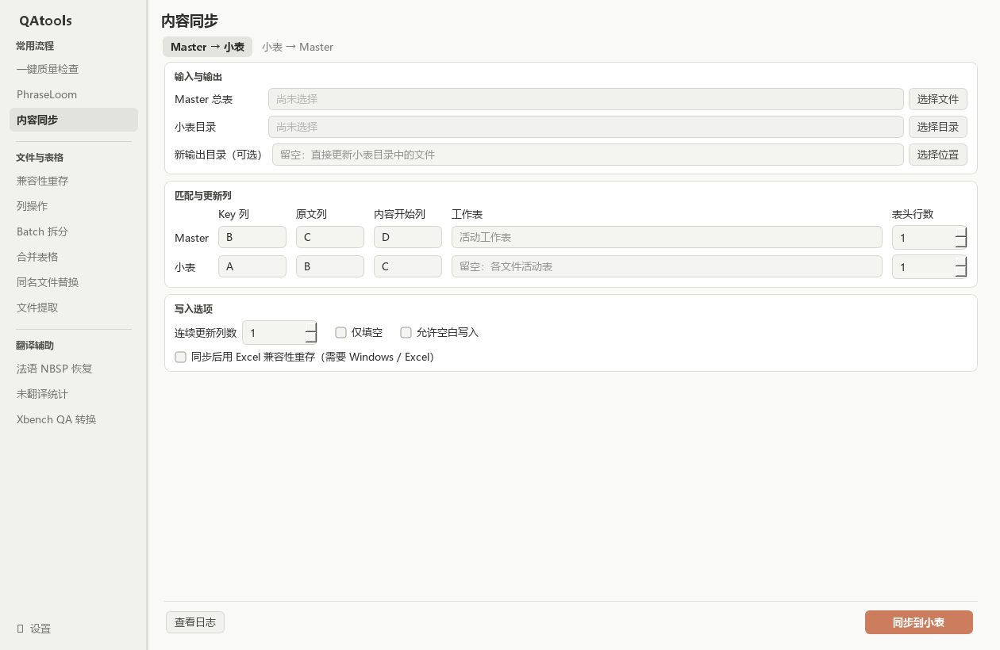
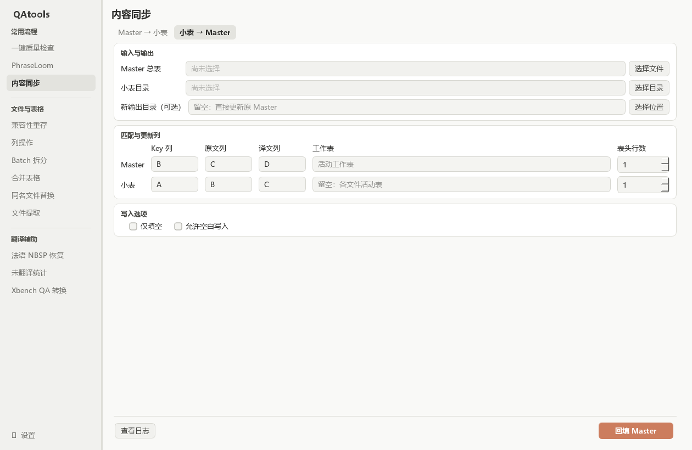
真实空值不会写成文字 None 或 nan；用户输入的文字 None、nan、NA、NULL 以及首尾空格、换行原样保留。两项写入选项彼此独立，默认均关闭。
按 Key + 原文匹配，不新增行；来源公式缺少缓存不能当空白处理。正向 Master 后行优先；反向按文件路径排序后，后文件、同文件后行优先，默认先忽略空白译文。
发现占用、只读或访问异常时弹窗提醒。先保存并关闭正在编辑的 Master；临时锁文件也可能是残留，需确认实际状态。
随机抽检最多 5 个文件。正常时只显示“可处理小表：xxx个”；发现只读时显示“文件只读，请取消read-only或选择【新输出目录】”。
抽检是选择当时的提醒，不代表整个目录一定可写。检查在后台执行；不会自动解除只读或关闭 Excel，实际保存时仍会报告失败。反向的小表只作来源读取，只读本身不阻止运行。
【仅填空】保留已有目标内容；【允许空白写入】允许来源空白清空目标。两项同时勾选时，仍只处理空白目标。完成后核对实际更新格数，失败与冲突可在查看日志中检查。
正向同步会在后台同时处理独立小表；选择 Excel 兼容性重存时需已安装桌面 Excel。部分文件失败不影响其余文件，失败文件的未保存修改不计入实际更新。
文件与表格
用桌面 Microsoft Excel 打开并重新保存工作簿，供需要 Excel 原生保存的后续流程使用。
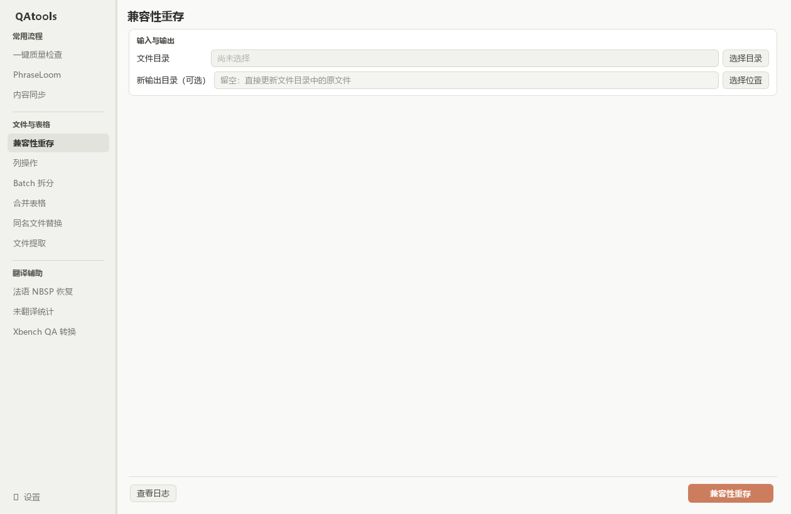
安装包不附带 Excel。此工具保持原扩展名，不负责格式转换，也不能保证修复损坏文件。Excel 保存时可能重新计算公式。
保存成功后才替换原文件；密码、保护或权限导致失败时会保留原件，并继续其他文件。
文件与表格
批量清空列内容、插入一列或删除整列。此工具需要桌面 Microsoft Excel。
| 动作 | 发生的变化 | 相关选项 |
|---|---|---|
| 清空列内容 | 清空表头之后的内容，包括公式，保留单元格格式。 | 表头行数默认 1，可设为 0。 |
| 插入一列 | 在指定列位置插入，后面的列右移。 | 新列第 1 行标题默认 Translation。 |
| 删除整列 | 包含表头在内整列删除，后面的列左移。 | 表头行数不影响删除。 |
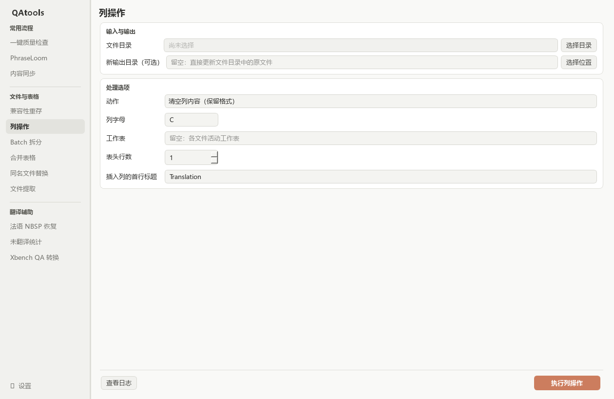
支持 .xlsx、.xlsm、.xls，保留目录结构。指定工作表不存在、保护阻止编辑或保存失败时，该文件会显示失败，其他文件继续。
文件与表格
先按数据行数分成小批次，处理完成后再按原始行位复原。
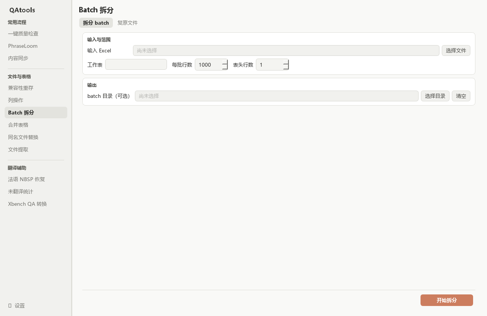
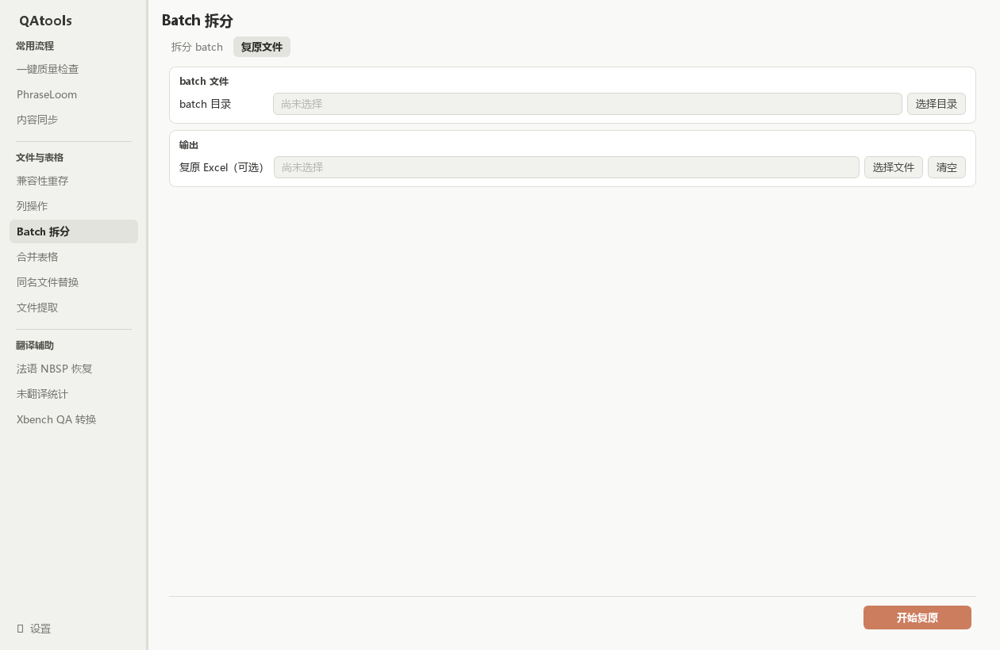
目录中的 batch_manifest.json 与 _qatools_restore_source_* 模板不可删除或修改。它们用于确定原始位置并保留完整工作簿结构。
每批包含重复表头，中间空行也计入数据行数。可在 batch 中新增结果列；不要增加、删除或打乱需要回填的数据行。超出预期范围的新数据会阻止复原；复原采用第一批的表头，格式以原模板为准。
文件与表格
将目录内各工作簿当前活动的工作表，汇总到一张新的 MergedData 表。
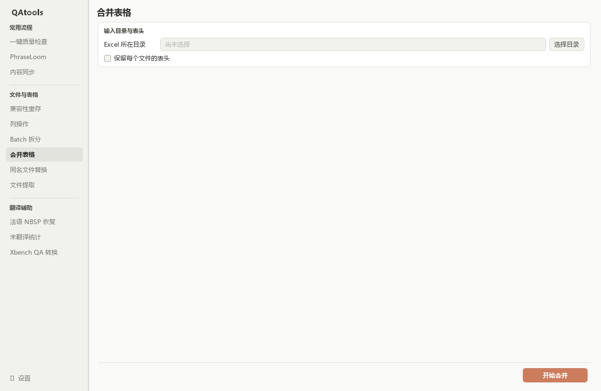
结果首列 SourceFile 记录来源文件名，默认保存在输入目录的上一级，文件名带 _merged_active_sheet_ 和时间戳。支持 .xlsx / .xlsm，递归扫描，.xls / .xlsb 跳过。
合并的是文本值，不复制原表样式、公式、批注或图片；源文件保持不变。某个文件读取失败时继续其余文件，完成提示会给出错误日志路径。
文件与表格
按完整文件名匹配，将来源文件替换到目标位置；替换的是整个文件。
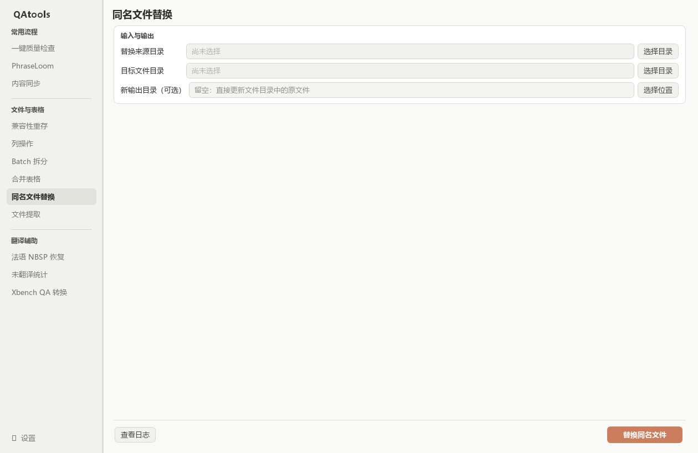
按含扩展名的文件名匹配，忽略大小写，不要求目录层级相同。只有唯一来源对应唯一目标时才替换；同名候选不唯一则跳过，不会随机挑选。来源中没有对应目标的文件不会被新增到目标目录。
在日志中找到本次备份目录，将备份文件按相同相对路径复制回目标目录。每次原位替换有独立备份，放在目标目录的 .qatools-backups 内；软件暂不提供恢复按钮。
来源文件不修改。另存模式会保留目标树中的未匹配与冲突 Excel 文件，不复制非 Excel 文件。
文件与表格
按文件名清单收集需要的 Excel 文件，先预览，再复制到新目录。
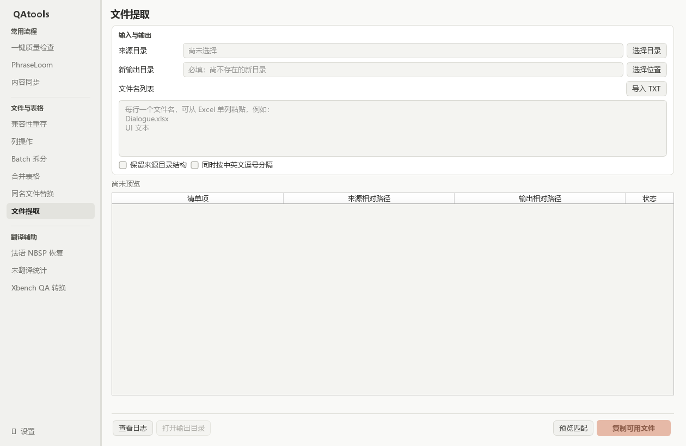
翻译辅助
修复法语标点周围的不换行空格，生成新的 Excel，原文件保持不变。
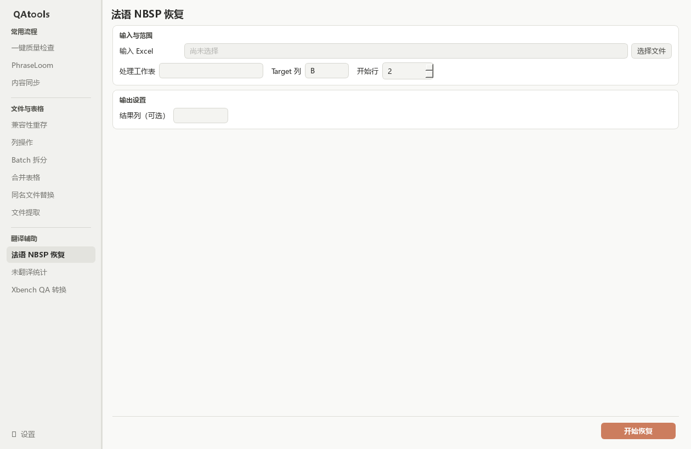
恢复 ; : ? ! % 前、« 后与 » 前的 NBSP；已有普通空格和窄不换行空格会统一。URL 内标点和 12:30 这类时间冒号保留。
指定结果列后，无需修复的 Target 也会复制过去。请确认该列可以写入，避免覆盖结果文件中需要保留的其他内容。表头识别规则可在设置调整。
翻译辅助
按文件统计未翻译量与总量，汇总为一张 Excel 统计表。
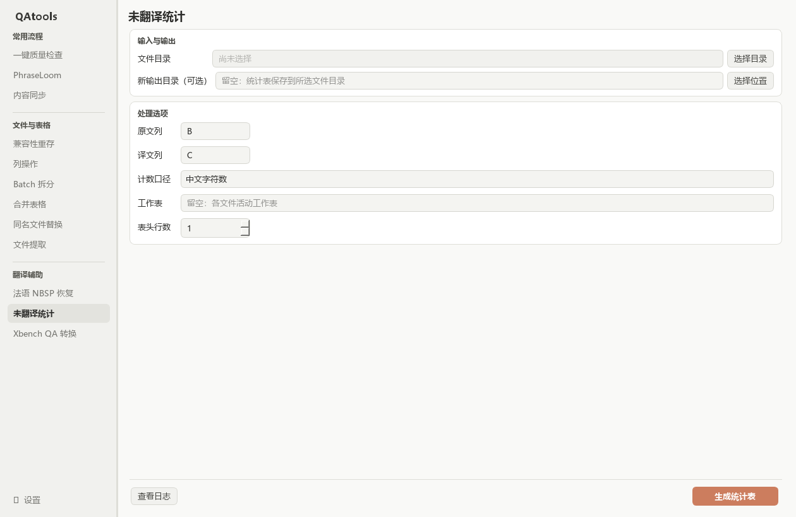
原文为空的行不计入；译文为空、纯空白，或去掉首尾空白后为 nan（不区分大小写）时计为未翻译。文字 None、NA、NULL 视为已有译文。这与内容同步原样搬运 nan 的规则不同。
中文模式统计汉字数量；英文模式统计英文词数。有效原文即使字数为零，仍可能计入行数。含公式时请先在 Excel 中计算并保存，以便统计使用已保存的值。
源文件不修改；再次运行会更新同名统计表，但不会把旧统计表纳入输入。失败或不支持的文件列在“未统计文件”页，并在日志中说明，不会当成零工作量文件。
翻译辅助
把 Xbench 导出的 QA Report 整理成便于筛选、修订的五列表格。
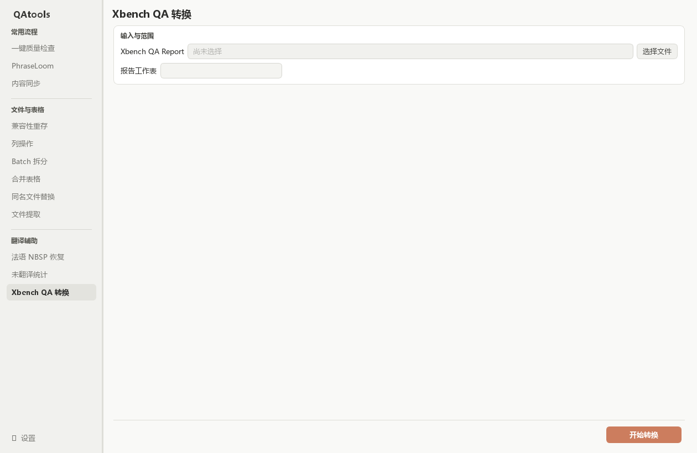
结果列为 文件名 / key / source / target / QA问题。同组的多个问题合并到一个 QA问题 单元格，以中文分号分隔，因此输出行数可能少于明细数。
文件名与 key 优先来自报告的 Metadata；缺少 key 时按可用的文件名和原文分组。此工具转换报告，不重新执行 Xbench 检查，也不自动回写译文。结果位于原报告旁，名称以 xbench_transform_ 开头。
侧栏底部
为项目使用的 Source / Target 表头建立别名，减少每次选择文件后的手动配置。
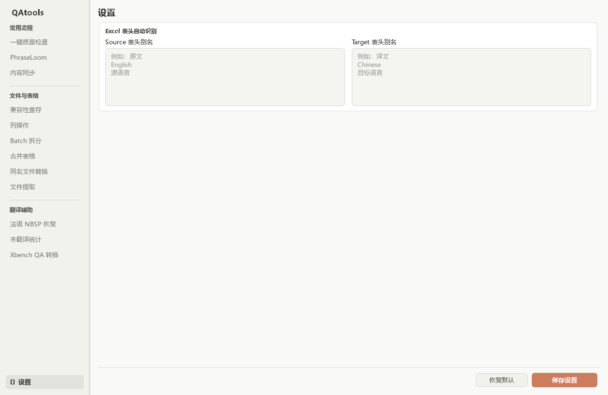
匹配忽略大小写和首尾空白，但要求完整表头相同。自定义别名优先，未命中时回退到内置 source / target；同级命中多列或无匹配时显示“请指定”，需要手动确认。
仅一键质量检查与法语 NBSP 使用这套别名。内容同步、统计仍填写列字母；PhraseLoom 使用自己的表头名称或列序号。QA 页的【记住选项】另行保存检查配置。
内容同步、兼容性重存、列操作、同名文件替换、文件提取和未翻译统计的底部“查看日志”打开独立小弹窗。正常文件使用一行摘要，失败或冲突补充必要原因；关闭弹窗不会停止任务，再打开可以继续查看。
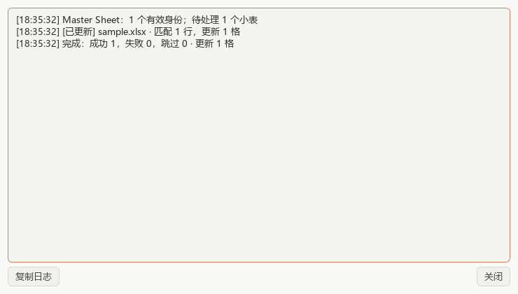
处理在后台进行，日志逐步刷新。关闭弹窗不停止任务；点击【复制日志】复制当前显示内容。日志很多时会省略较早记录，以完成摘要的计数为准。
| 工具 | 新输出目录留空 |
|---|---|
| Master → 小表 | 更新原小表，Master 不变 |
| 小表 → Master | 更新原 Master，小表不变 |
| 列操作 / 兼容性重存 | 更新所选目录中的原工作簿 |
| 同名文件替换 | 先备份，再原位替换目标文件 |
| 未翻译统计 | 在所选目录写统计表，原工作簿不变 |
填写新输出目录时必须指定尚不存在的目录。以上约定不改变一键质量检查生成报告副本的方式；这些目录工具不会额外生成 report 或 JSON 日志文件。合并表格的失败日志、Batch 的复原文件仍各自保留。
workflow_check_原文件名.xlsx。下一次运行前请把旧报告重命名或移动到其他目录。